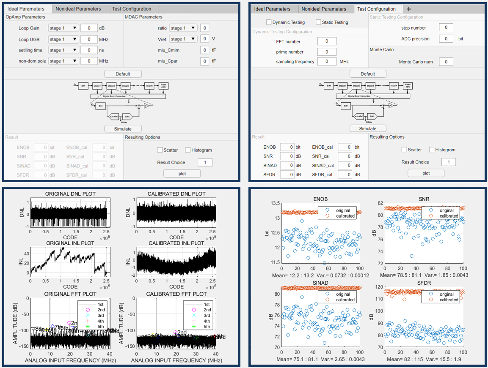
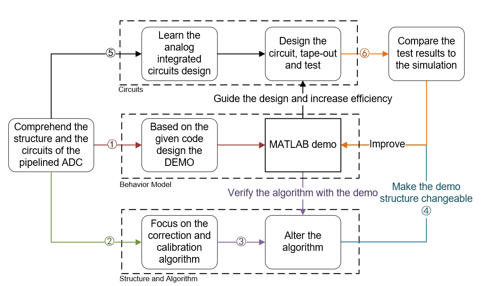

Pengyu Zeng
I am a senior student at Wuhan University, Wuhan, China, where I major in Electronic Information Engineering. I am interested in In-memory Computing, Analog and Mixed-signal Circuits, Radio Frequency Circuits and Hardware Security. I was a research intern supervised by Professor Ningyuan Cao at the University of Notre Dame in the summer 2022.
Email /
Resume /
Linkedin
Research Experience
After two years of learning in course and research, I firmly chose analog and mixed-signal
circuits design and its related areas as my research direction. I have research experience in analog circuits design including ADC and SerDes,
digital circuits design about hardware-accelerated SoC and board level circuits design.
Highlights
Tutorial: Analysis on 2T and 1T Array based CIM and PUF
Tutorial and report: Detailed Analysis of the Digital Error Correction Algorithm in the Pipelined ADC
Writing example: A 40Gb/s CTLE of a PAM-4 Wireline Receiver
Compute In-Memory for Deep Neural Network
Due to the large amount of multiply-accumulate (MAC) operations in the deep neural network (DNN) and the inherently ability of DNNs to tolerate the computation errors, analog and mixed-signal circuits is a good option to implement the DNN.
I have done some preliminary research on it.
Tutorial: Analysis on 2T and 1T Array based CIM and PUF
The advantages of analog computing are as follows:
Makes use of the Kirchhoff's Current Law to achieve O(1) MAC operations.
Has low energy dissipation compared to digital circuits in low bit-widths.
Stores the weights of neurons locally to avoid the Von Neumann "Bottleneck" in massive data transmission.
There are two main approaches to realise the analog computing:
Resistive processing units (RPU) use resister arrays to store the weights and generate the input data in time or voltage encoded form. It can also be practical in DNN training with changeable conductances and stochastic computing algorithm.
Binary switched capacitor arrays achieve the DNN in the binary neural network. The weights and the input data are digital signal, which is more compatible to current applications. It can be extended into multi-bits form.
Both of the RPU and the binary switched capacitor arrays require digital computing between layers for flexible network configur-abilities including activation functions, so ADCs or comparators are needed in the analog computing circuits.
Pipelined ADC
Pipelined ADC is one of the most popular types of analog-to-digital convertor (ADC) and the digital error correction
is a significant algorithm in the pipelined ADC. The structure of the ADC depends on this algorithm which can correct
the aperture error and the digital output error caused by the mismatch of comparators.
My research can be divided into three parts: analyse the algorithm, build a behavioral model of the ADC and design the circuits.
Analysis on the algorithm: There are many different ways to interpret and analyse the digital error correction algorithm in the previous art. My work is to integrate different methods and propose a detailed and systemic analysis on it:
"Detailed Analysis of the Digital Error Correction Algorithm in the Pipelined ADC".
The behavioral model built on MATLAB: The simulation on the EDA tools such as Cadence is very slow. The behavioral model can briefly show the performance of the ADC
and verify the structure. A model on the MATLAB can accelerate the whole design process and this model will be open-source after improvement.

The research proposal:

A 40Gb/s CTLE for a PAM4 Wireline Receiver
As the data rate in the wireline transmission continues to increase, serializer & deserializer (SerDes) is widely used to recover the distorted signal caused by the channel with the low-pass feature.
Continuous time linear equalizer (CTLE) as the frontend in the receiver plays a significant role in preliminary improving the signal quality.
This research analyses the structure of CTLE and proposes comprehensive improvements on raising the peaking gain and keep the balance among the DC gain, power dissipation, silicon area, etc.
Research paper: A 40Gb/s CTLE of a PAM-4 Wireline Receiver.
Board Level Circuits Design

PCB board is useful for chips verification and system implementation. I have learned and been able to skillfully design PCB-level circuits. These two works are for a intelligent transport robot (left) and a frequency modulator (right).
Awards & Achievements
Mitacs Globalink Research Internship Award
Beacon-fire Scholarship
Merit Student of Wuhan University
The First-class Scholarship of Wuhan University
The Excellence Award of National College Students Integrated Circuits Innovation Contest
The Third Prize of Wuhan University Engineering Training Contest
The Third Prize of Wuhan University Electronic Design Contest
Latest update on September 27, 2022 at 15:10 UTC. Powered by W3.CSS .
The graph in the section "Compute In-Memory for Deep Neural Network" is quoted from NICS-EFC .